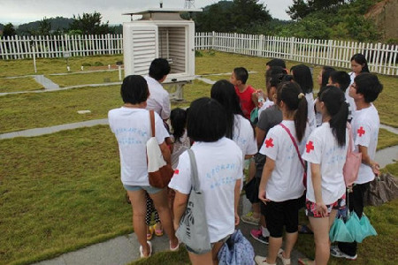
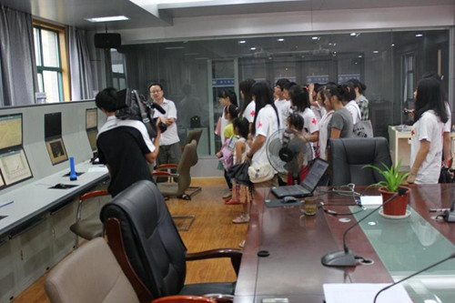
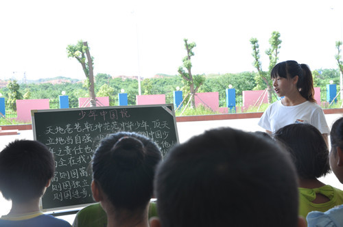

大学生志愿者暑期关爱农民工子女
桂电志愿者网 日期：2015-04-17 来源：
南京信息工程大学生志愿者暑期关爱留守儿童
7月15日，南京信息工程大学14名大学生志愿者带领10名留守儿童到枞阳县气象局进行体验试教学实践活动，县气象局技术人员为大学生和留守儿童详细介绍气象观测仪器、观测方法、预报制作和气象灾害防御等相关知识，通过活动的开展，增强了大学生对县级气象业务流程了解,丰富了留守儿童气象灾害防御知识和对气象科技知识的学习兴趣。（枞阳县气象局）

图为县气象局技术人员为大学生和留守儿童详细介绍气象观测仪器

安师院大学生服务队关爱农民工子女
为了丰富十里中心学校学生暑期活动，建设良好的校园文化，提升学生的文化认识度和民族自豪感。近期，在十里铺乡文明办、妇联和十里中心学校的组织安排下，安庆市大观区十里中心学校的所有学员在安师院大学生服务队的带领下诵读《少年中国说》拉开了“经典诵读•传承梦想”系列活动的序幕。

来自安庆师范学院2013年暑期大学生“三下乡”关爱农民工子女夏令营实践服务团的志愿者们带领学生们开展了经典诵读系列活动，活动形式主要是每天清晨和吃午饭前在志愿者的带领下，孩子们大声诵读《少年中国说》、《弟子规》、《论语》等经典作品，活动过程中，孩子们针对文中不理解的字词、语句与志愿者们进行了交流，队员们为大家做了耐心细致的解答。
【责任编辑：李想】